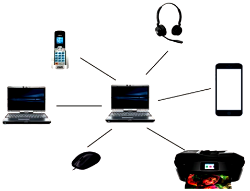

PAN
Una Red de Area Personal (PAN), es una red inalámbrica de corto alcance que conecta dispositivos electrónicos personales entre sí. Estos dispositivos pueden ser teléfonos móviles, computadoras portátiles, tabletas, auriculares, teclados, ratones, impresoras y otros periféricos. La tecnología más común utilizada para las PAN es Bluetooth, aunque también se pueden utilizar otras tecnologías como Zigbee y Wi-Fi de baja potencia.
